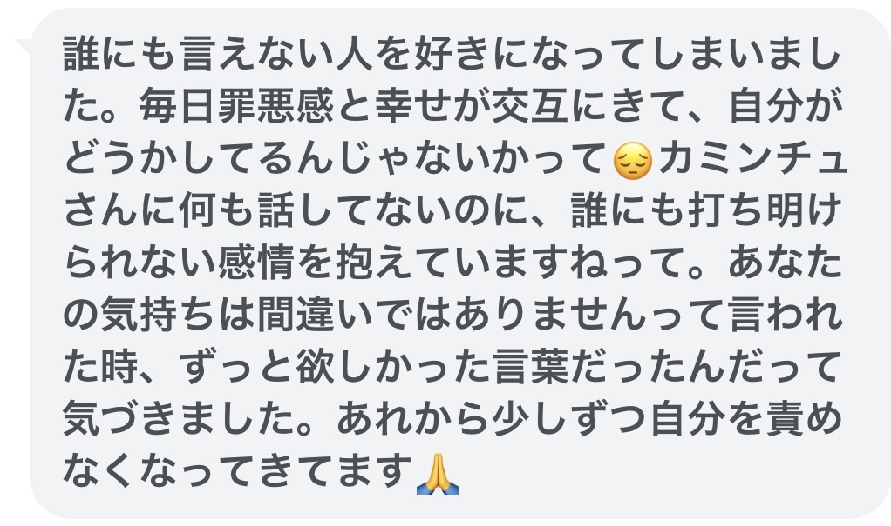
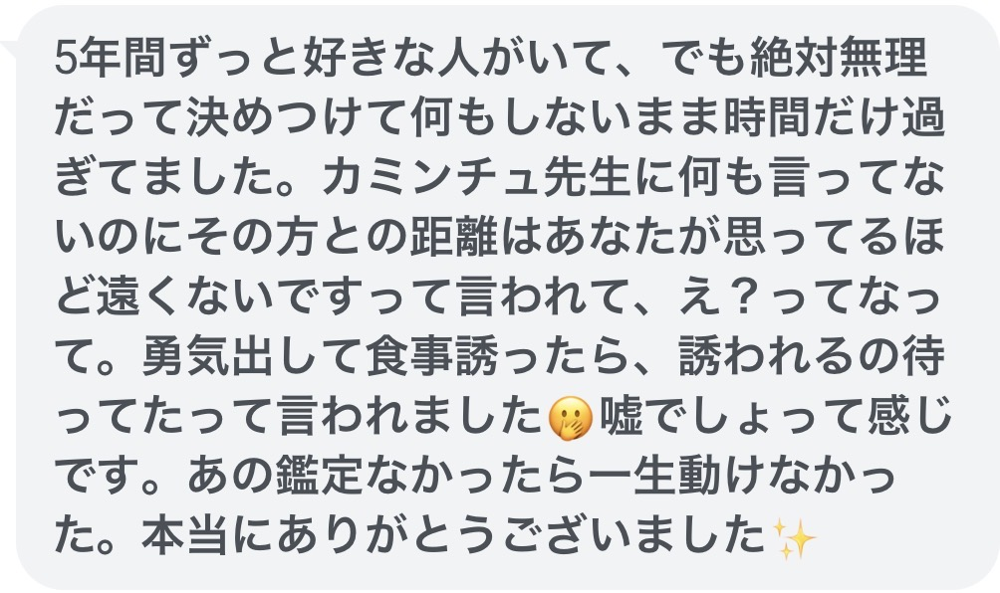
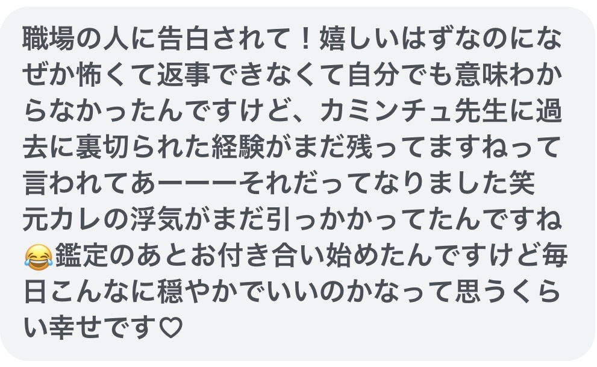
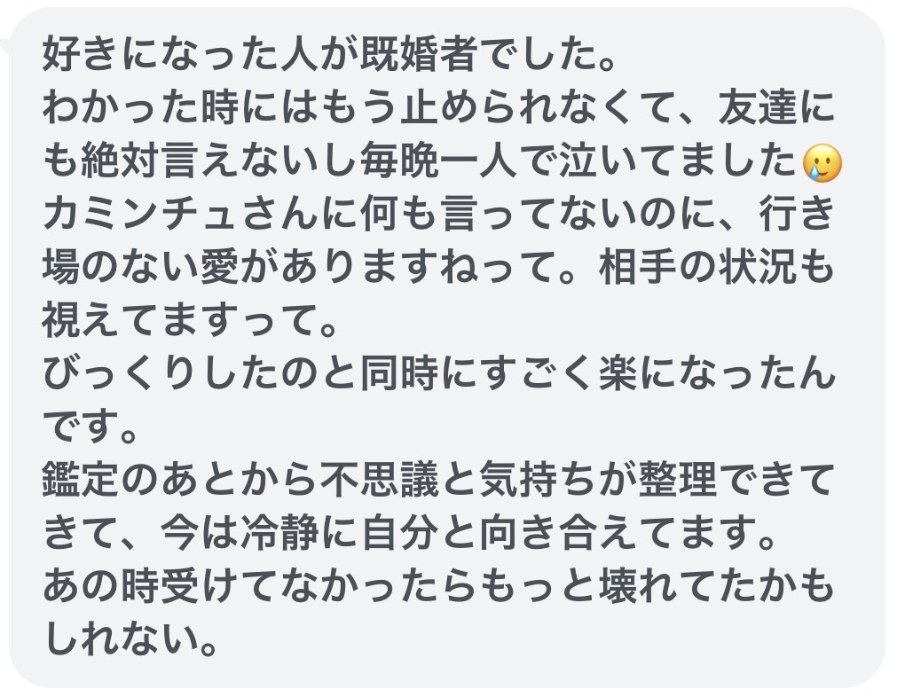
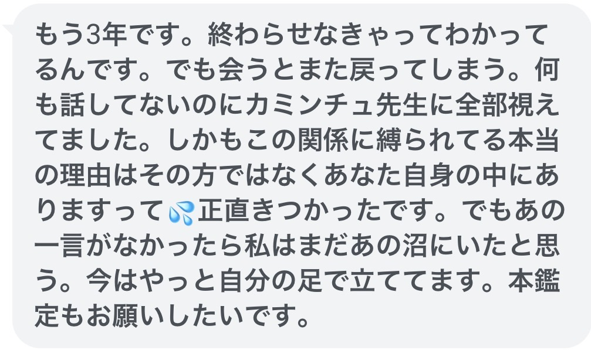
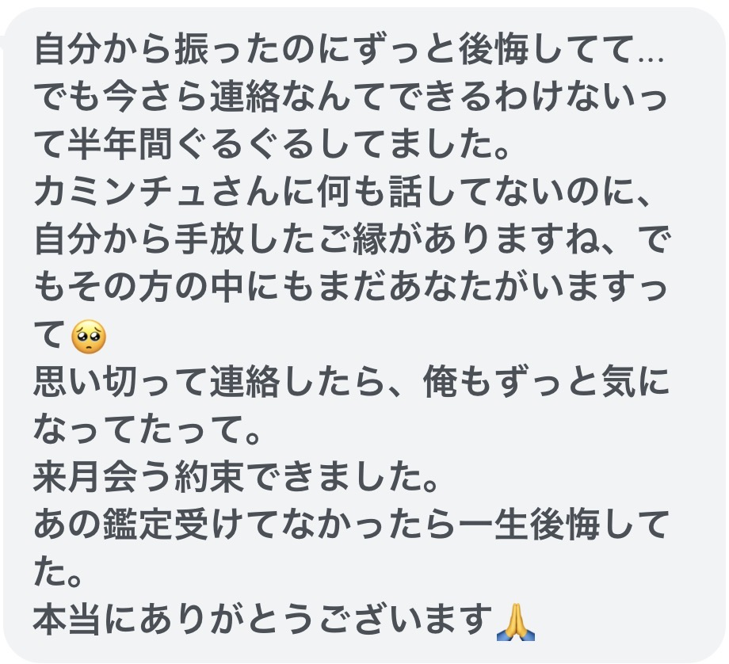

あの人のこと、
まだ諦めきれませんか
無料霊視
こういう子が
ようけおるさぁ
ばぁばのとこに来る子はね、
みんな最初に、こう言うさぁ。
「こんなこと、誰にも言えなくて」
好きな人がおる。
でも、その気持ちを誰にも話せん。
まわりに言うたら、きっと叱られる。
「やめなさい」て言われるのが
分かっとる。
せやから、ひとりで抱えたまま
何年も過ごしてきた子が、
ようけおるさぁ。
連絡が来た日は、一日じゅう明るい。
来ん日は、何度も画面を見てしまう。
分かっとるよ。
自分でも、分かっとるさぁ。
分かっとるのに、離れられん。
ばぁばはね、
その気持ちを、間違いやとは言わんよ。
——ばぁばもね、
そうやった。
カミンチュと
呼ばれるまで
宮古島のユタ
カミンチュ ばぁば
はじめまして。
宮古島のカミンチュ ばぁば、です。
ばぁばはね、
選ばれた特別な人間やなかったよ。
ばぁばの話を、
三つだけ聞いてくれるかね。
一｜言えんかった、十年
若い頃、ひとりの人を十年想うとった。
言えんかった。
言うてしもうたら、
いまの距離まで壊れる気がしてね。
年に一度届くかどうかの短い返事を
何度も読み返して
「まだ繋がっとる」と
自分に言い聞かせとった。
誰にも話せんかったさぁ。
言うたら笑われる。
「いい歳して」
「もう忘れなさい」て言われる。
分かっとったから、黙っとった。
十年、ひとりで抱えとったよ。
二｜伝えた日に、消えた
ある日、とうとう伝えたの。
もう隠しきれんかったから。
そしたら、その日を境に
連絡は来んくなった。
十年分が、
一瞬で「なかったこと」になってね。
あの夜、
裸足で砂浜まで歩いていって
波打ち際にしゃがみ込んで
声も出さずに泣いたよ。
星がきれいだったのだけ覚えとる。
あんなに泣いとるのに、
空だけは何事もないように美しくて
それがまた、残酷でね。
三｜笑っとるのに、
笑ってない
変わったのは、
それからしばらくしてさぁ。
港の近くの、五席しかない居酒屋。
隣に座った若い子が、
店主と楽しそうに話しとった。
でもね、おかしいんだよ。
その子、笑っとるのに——笑ってない。
その顔をね、
ばぁばは知っとった。
十年のあいだ、
毎朝、鏡で見とった顔だったから。
気づいたら、口が勝手に動いとった。
「……あんた、
本当は泣きたいんじゃないかい？」
その子の笑顔が、一瞬で崩れてね。
ぽろぽろ涙をこぼしながら、
こう言うたよ。
「……なんで、分かるんですか」
ばぁばにも、分からんかったよ。
島の人らが、いつからか
ばぁばのことを
"カミンチュ" と呼ぶようになった。
あれから、四十年以上。
たくさんの子の話を、
聞かせてもろうてきた。
ばぁばはね、
誰にも言えん気持ちを
十年抱えとったから、
それを抱えとる子の痛みが、
視えるんだと思っとるよ。
無料の霊視で
視るのはこの3つさぁ
いま、何が起きとるか。
表に見えとることと、
その下で動いとること。
お相手との間に流れとるもんが、
近づいてきとるのか、
遠のいていきよるのか。
そして——いまは待つ時期なんか、
動く時期なんか。
先のことはね、
ばぁばにも分からんさぁ。
でも、いま何が起きとるかは視えるよ。
視えたもんを、そのまま渡すだけ。
受け取った子から、
届いた言葉
みんなね、
最初に同じことを言うさぁ。
「なんで、分かるんですか」って。
誰にも言えない人を好きになってしまいました
ずっと欲しかった言葉だったんだって気づきました

5年間ずっと好きな人がいて
誘われるの待ってたって
言われました

嬉しいはずなのになぜか怖くて返事できなくて
過去に裏切られた経験がまだ残ってますねって

毎晩一人で泣いてました
行き場のない愛がありますねって

もう3年です。
終わらせなきゃってわかってるんです
あの一言がなかったら
私はまだあの沼にいた

自分から振ったのにずっと後悔してて
思い切って連絡したら、
俺もずっと気になってたって

※LINEでいただいたお声です。
※実際に無料霊視を受け取った方に、
掲載してよいかお尋ねし、
お許しをいただいたものです。
視てもろうた子が
言うてくれること
ずっと誰にも言えんかったことを、
やっと口に出せた、と。
抱えとったもんに名前がつくとね、
それだけで軽うなる子が多いよ。
待つんか、離れるんか、
自分で決められた、と。
迷いが消えるわけやないさぁ。
でも、どっちに流れが向いとるか
視えたら、
自分で選べるようになるよ。
そして——自分のことを、
やっと許せた、と。
好きでおったことも、
待ってしもうた時間も、
まちがいやなかったと思えた時から、
人の巡りは静かに変わっていくさぁ。
黙っとったら
あとで嫌な思い
させるからね
ひとつだけ、先に言うておくさぁ。
当たる当たらんの話やないさぁ。
ばぁばはね、
いいことばかり言わんよ。
「その人とはうまくいくさぁ」
そう言うてあげられたら、
ばぁばも楽さぁ。
でも、視えんもんは視えん。
視えたもんを、
違うふうには言えん。
離れたほうがええ流れが視えとったら、
ばぁばはそう言うよ。
聞きたない話かもしれんね。
それでも、黙って期待させといて、
あとで裏切るほうが、
ばぁばは嫌さぁ。
ばぁばが正直に言うのは、
お相手との流れのことだけさぁ。
四十年、
いろんな話を聞いてきたからね。
今さら驚くようなことは、もう無いよ。
その気持ちが、ちゃんと届くように。
ばぁばは、そこを視るさぁ。
宮古島の御嶽から、
無料で視させて
もらうさぁ
ばぁばが視られるのは、
1日10人までさぁ。
お一人ずつ、ちゃんと視るからね。
その日の分が埋まったら、
翌日以降のお届けになるよ。